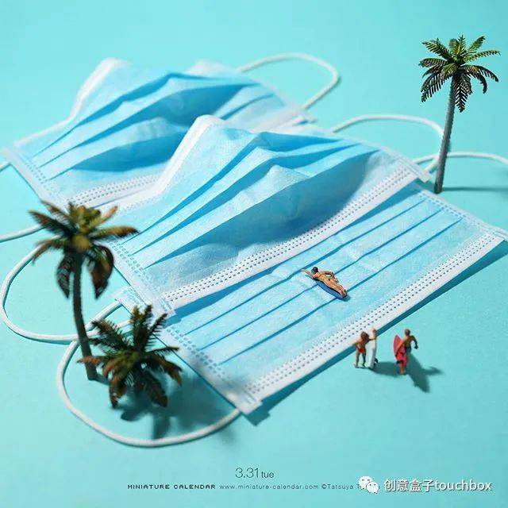
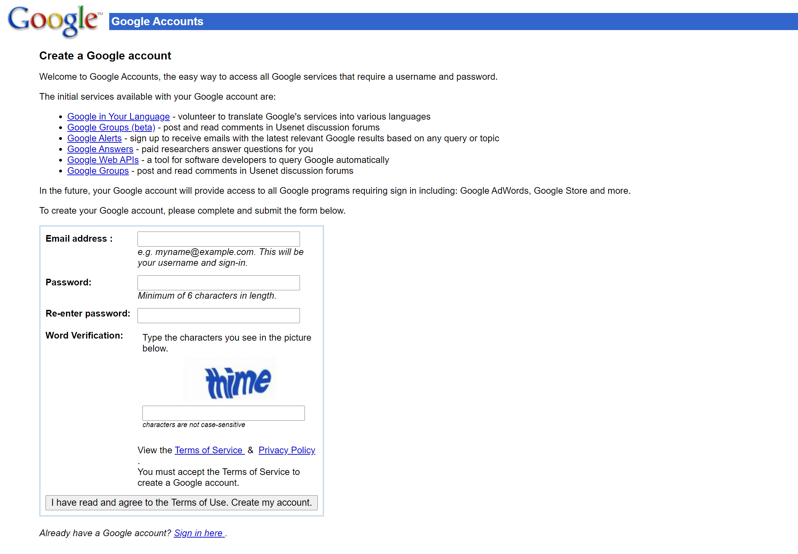
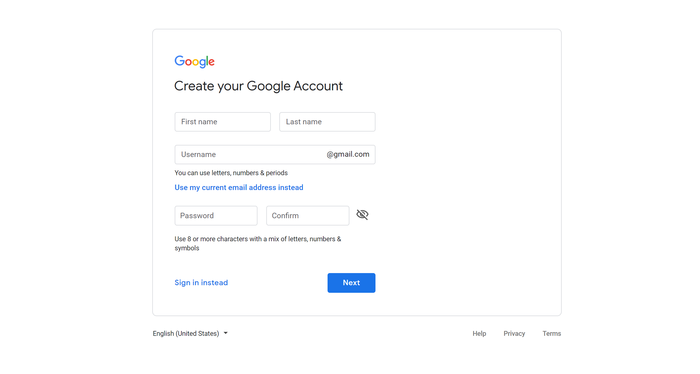
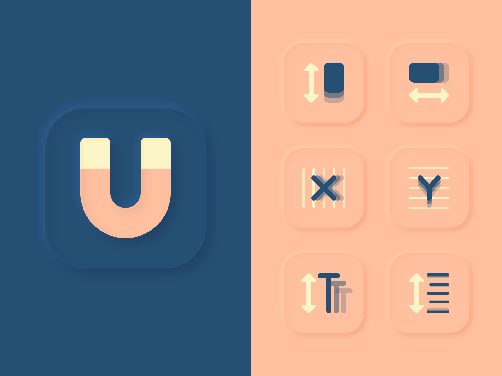
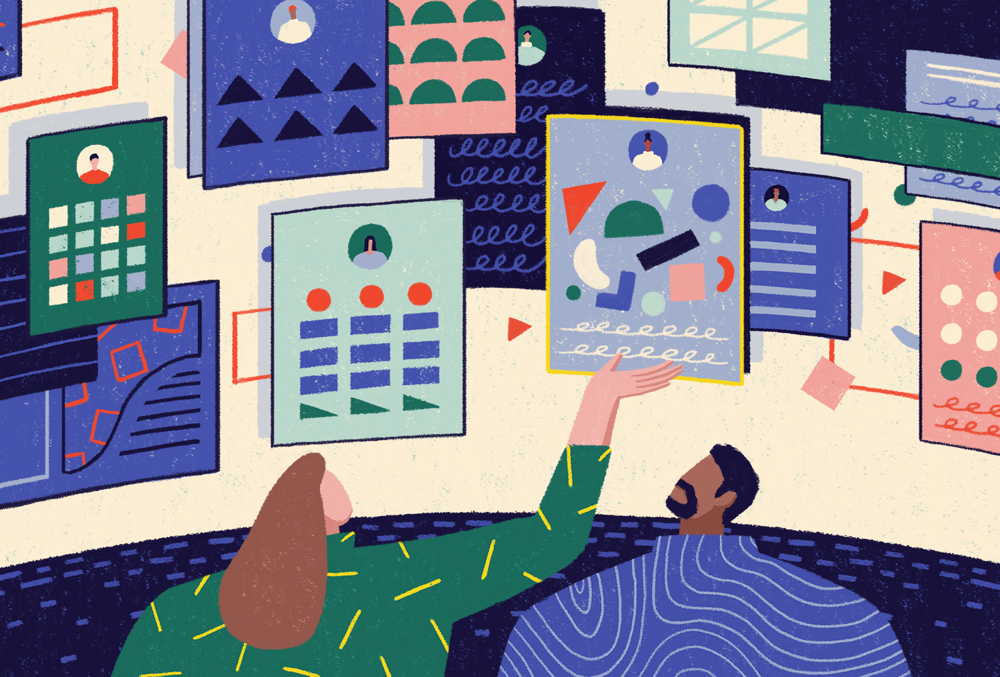

设计周刊 Design Weekly #25
Thu, Sep 17, 2020
🏷 设计灵感
给日常生活增添点乐趣
https://www.designboom.com/design/blue-cat-milk-packaging-depot-09-03-2020
日本艺术家田中达也的微缩模型，田中达也是近年来日本先锋艺术家代表人物之一
他最为标志性的就是亲手制作各种小玩偶
搭配上生活中的常用物品，制作出各种微型场景
将最平凡的事物，变成令人心动的风景

🏷 设计资源
Google 注册表单的演变
https://trudov.com/design/the-evolution-of-the-google-sign-up-form/
互联网发展的一面镜子。


🏷 设计工具
Toolabs Design System Manager – Figma
https://www.figma.com/community/plugin/862818788004280193/Toolabs-Design-System-Manager
增强版的设计系统管理插件

🏷 设计文章
如何利用8pt网格创建强大的布局。
https://marcandrew.me/how-to-create-stronger-layouts-with-the-8pt-grid/
在UI设计中，网格布局就是一切。将 4pt Baseline Grid 与 8pt Grid 组合使用可以让整个设计更加和谐。

🏷 随便看看
创业者如何聘请第一位设计师
https://www.designerfund.com/blog/a-founders-guide-to-hiring-your-first-designer/
作为一名创始人，你需要雇佣合适的人，以实现业务目标。这篇文章将帮助你确定什么样的设计师最适合你的成长团队。
从应聘者的角度也可以了解一下创业团队是如何招聘设计师的。
